Why Twine?
Twine is a free, open source platform that allows you to build interactive stories without needing to know how to code. The final stories are built in HTML, so you can publish them online.
Download twine from twinery.org.
What does a Twine game look like?
Let's play one!
Queen Crumbchin, about being a cat...
Discussion
What makes Queen Crumbchin fun? What elements could we include in our own games?
Let's make a game!
Open Twine, and start a new story.
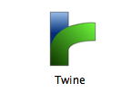
Start
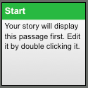The first passage in your story must be titled "Start". Twine will make the passage for you upon creation of your new story. Double click it to add your own text.
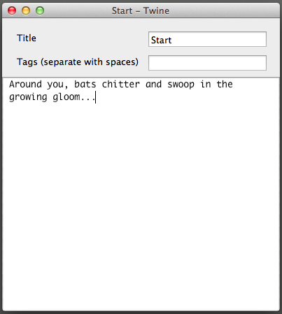Start
Now, add a link to another passage.
Syntax for links is:
[[what will appear to user|Passage_to_link_to_no_spaces]]
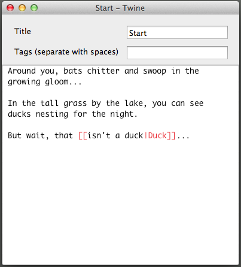Second Passage
Click the icon that looks like a page with a sparkle to create another passage. Title this one to match the link in the first passage, and add text.
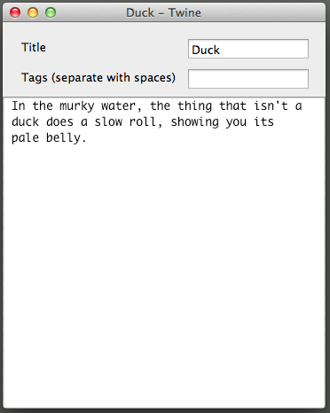Links
If your passages are linked correctly, you'll see an arrow between them on the Twine board. You can drag the passages to arrange them however you like.
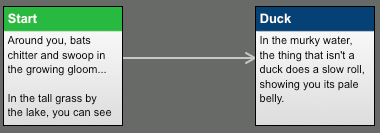Branching
But what about choices?! Reopen your first passage and add a second link, then create a third passage with that title.

Branching
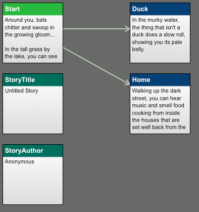Cool!
Test Play
We can see if passages are linking correctly on the Twine board, but it's more fun to check that everything's working well by playing! The Test Play command will open your story as an HTML file in a browser.
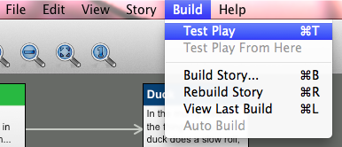Work period
That's the basics! Create passages and link them together however you like. Remember that links can go to existing, earlier passages- stories may be non-linear.
Another fun game!
The Message, about space!
Discussion
What makes The Message fun?
Images
Save
To save the HTML file of your story, Build it. You'll need an HTML file when we publish, and it's also nice to share with your friends.
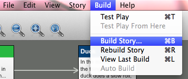HTML
You can open an HTML file in your browser manually.
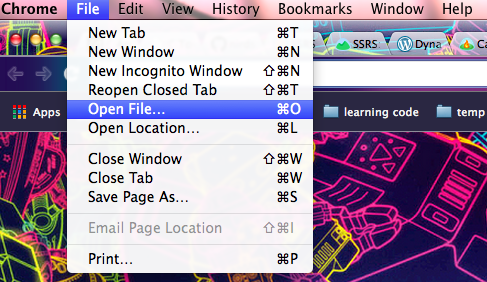Save
Building the story only saves the HTML version, not the source code. To save the source code (a .tws file), save the story. You'll need this to continue working on the story in Twine.
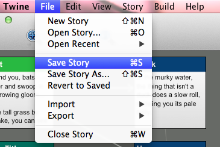Publishing
There are two good choices for publishing your game to the web:
- Philome.la
Super easy to use, but requires a Twitter account to log in
- Text Adventures
More complicated to use, but requires only an email address to sign up
Philome.la
This is by far the better choice for publishing, for anyone who has a Twitter account.